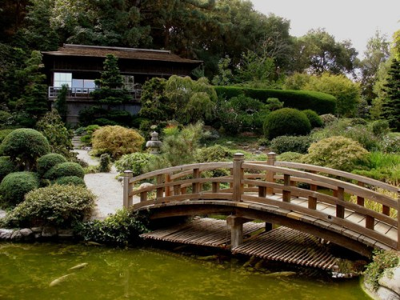

ÁREAS PROTEGIDAS
♥ Parque nacional Fuji-Hakone, Japón
El Parque Nacional de Hakone, es una de las áreas protegidas más importantes y más visitadas en Japón. Se sitúa en parte de los territorios de Tokio, la prefectura de Yamanashi, la Prefectura de Shizuoka y la Prefectura de Kanagawa.